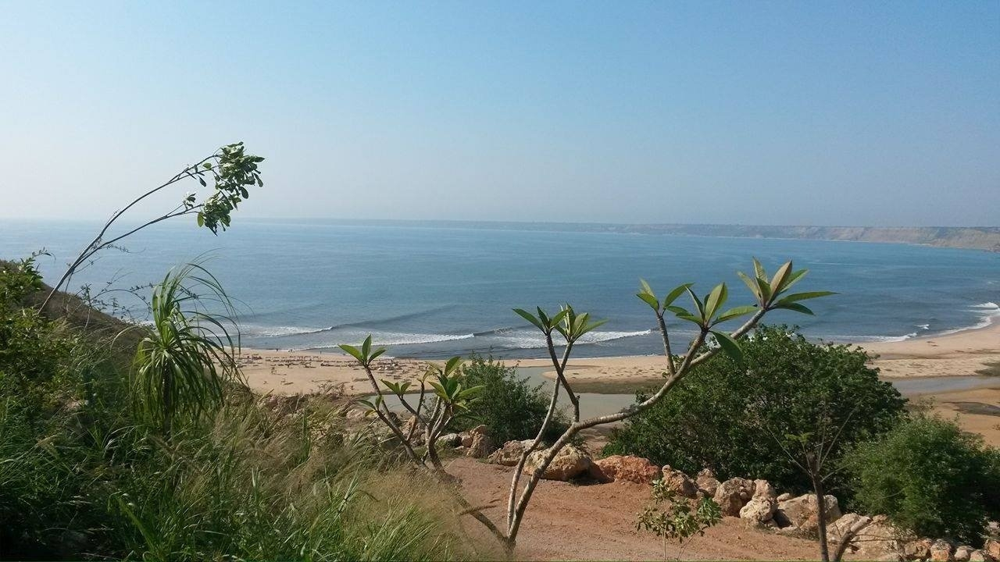

Bengo
Uma província marcada pela riqueza natural, histórica e cultural de Angola.

Sobre a Província
Bengo é uma província situada na região norte de Angola. A sua capital é Caxito. Destaca-se pelas suas paisagens naturais, rios, agricultura e proximidade com Luanda.
História
A região do Bengo possui uma história ligada aos povos que habitaram o território angolano antes e durante o período colonial. Ao longo dos anos, desenvolveu-se através da agricultura, do comércio e da ligação com outras regiões.
Economia
A agricultura tem grande importância na economia provincial. Destacam-se também a pesca, a criação de animais, o comércio e outras atividades que contribuem para o desenvolvimento da região.
Cultura e Tradições
O Bengo apresenta uma diversidade cultural influenciada pelas tradições dos povos da região. A música, a dança, a gastronomia e as manifestações tradicionais fazem parte da identidade das suas comunidades.
Identidade
O Bengo representa uma parte importante da identidade angolana. A sua riqueza natural, hospitalidade e património cultural contribuem para a diversidade e a história de Angola.